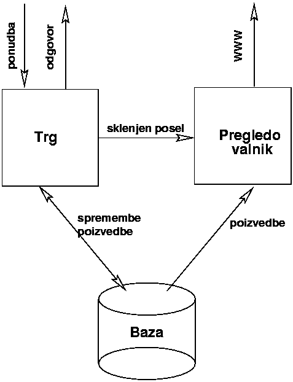

Osnutek volilne borze
Kaj in za koga
Blagovna borza, odjemalci se priklapljajo preko Interneta
(WWW). Papirji so predsedni¹ki kandidati. Trgovanje precej
enostavno, vsak ponudnik ima lahko hkrati odprtih le 10
pozicij. Trguje se v procentih. Zapade na ponedeljek po prvem
krogu volitev. Drugi krog, drugi papirji.
Predpostavka je, da je veèina odjemalcev Netscape ali IE vsaj
3.0. Ostali bodo bolj podprti bolj slabo, ¹e posebej èe nimajo Jave.
Stre¾nik bo nek Unix, uporabljali bomo javno dostopen SW. Moje
preference so PostgreSQL za SQL stre¾nik, Apache za Web server,
Python za CGI skripte, C in C++ za trg, knji¾nica ACE za
komunikacijo in sinhronizacijo procesov (zato C++). Java za
kliente.
Tabele
-
Fifo
-
Vsebuje odprte pozicije. Atributi:
| Ime
| Tip
| Razlaga
|
| Vrsta
| char(1)
| Nakup/Prodaja
|
| Cena |
float
| Ponujena cena |
| Kolicina
| int
| Ponujena kolièina. Vsota vseh odprtih pozicij ne sme
preseèi 10.
|
| Papir_ID |
char(4) |
Oznaka papirja |
| Ura |
time |
Ura prejetja ponudbe |
| Datum |
date |
Datum prejetja ponudbe |
| Ponudnik |
char(10) |
Oznaka ponudnika |
-
Papirji
-
©ifrant papirjev. Atributi:
| Ime
| Tip
| Razlaga
|
| Papir_ID
| char(4)
| Enolièna oznaka papirja
|
Definiran je enolièen indeks glede na ¹ifro papirja.
-
Stranke
-
Vsebuje seznam strank. Atributi:
| Ime
| Tip
| Razlaga
|
| Stranka_ID
| char(10)
| Enolièna oznaka stranke
|
| Naziv |
text |
Naziv stranke |
| EMail |
text |
Naslov elektronske po¹te |
-
Posli
-
Vsebuje sklenjene posle. Atributi:
| Ime
| Tip
| Razlaga
|
| Datum
| date
| Datum sklenitve posla.
|
| Ura |
time |
Ura sklenitve posla |
| Papir_ID |
char(4) |
Oznaka papirja |
| Cena |
float |
Cena |
| Kolicina
| int
| Kolièina sklenjenega posla
|
| Kupec |
char(10) |
Oznaka kupca |
| Prodajalec |
char(10) |
Oznaka prodajalca |
V zgornji tabeli uporabljam tipe specifiène za PostgreSQL. To je
potrebno ¹e malce premisliti.
Skica delovanja

Ponudba je veljavna èe so izpolnjeni naslednji pogoji:
- Stranka obstaja v bazi.
- Papir obstaja v bazi.
- Cena je med 0 in 100%.
- Stranka ima skupaj s to ponudbo manj kot 11 odprtih
pozicij. Tudi èe bi se ponudba zaprla, skupno ¹tevilo pa
presega 10, je ponudba neveljavna.
Protokol dodajanja ponudbe
Odjemalec se pozanima, èe lahko da ponudbo (èe nima ¾e izpoljnjene
kvote) in dobi zaporedno ¹tevilko. Potem po¹lje ponudbo z vsemi
podatki. Èe ustreza vsem pogojem, se uvrsti v FIFO, ali pa
zapre. Sicer pa se lahko zgodi ena od naslednjih zadev:
- Podatki niso v pravi obliki (npr. cena>100)
- Ponudba je zavrnjena ker je ¾e preveè odprtih pozicij.
- ©e kaj?
Zaporedne ¹tevilke uporabljamo zato, da se izognemo problemom, èe
nekdo dvakrat zapored po¹lje isto ponudbo. Èeprav je to povsem
legitimno - ves èas kupuje¹ isto zadevo, ne bo¹ se zafrkaval z
izpoljnevanjem istih obrazcev vedno znova.... think, think...
Opombe
Problem, ki nastopi, je preverjanje ¹tevila odprtih pozicij. Zgodi
se lahko, da ima nekdo 9 odprtih pozicij in v zelo kratkem èasu
po¹lje dve ponudbi. Ker preverjanje ¹tevila ponudb traja nekaj
èasa, se lahko zgodi, da bi obe ponudbi dodal hkrati. Ideji, ki se
porodita:
- ©tevilo odprtih pozicij je shranjeno v zapisu o stranki. SQL
server poskrbi za to, da ne moremo brati ko se ¹tevilka
spreminja (je to res?). Ali pa to posebej za¹èitimo.
- Celoten postopek dodajanja ponudbe je za¹èiten.
Dodaten problem predstavlja sortiranje stringov. Ka¾e, da
PostgreSQL 6.1 ne uporablja strcoll(), temveè strcmp(), ki pa ni
obèutljiv na locale. Poleg tega tudi strcoll() na Linuxu (¹e) ni
implementiran pravilno. Zaenkrat ni videti potrebe po sortiranju,
kjer bi nastopili ¹umniki. Sem pa preprièan da se bo pojavila tik
pred koncem.
Vsaka povezava s postgresom odpre nov proces. Èetudi naredi¹
free(), pa objekt v libpg++ ne zapre povezave. To je
potrebno ¹e malce raziskati... Mogoèe je potem bolje imeti ves èas
odprtih nekaj povezav. In narediti vse serijsko... Ali pa imeti
nek objekt, ki odpira in hrani povezave. Zbirka povezav.... S
èasom jih potem zapira...
Andrej Gogala
Last modified: Sun Aug 17 18:36:40 MET DST 1997